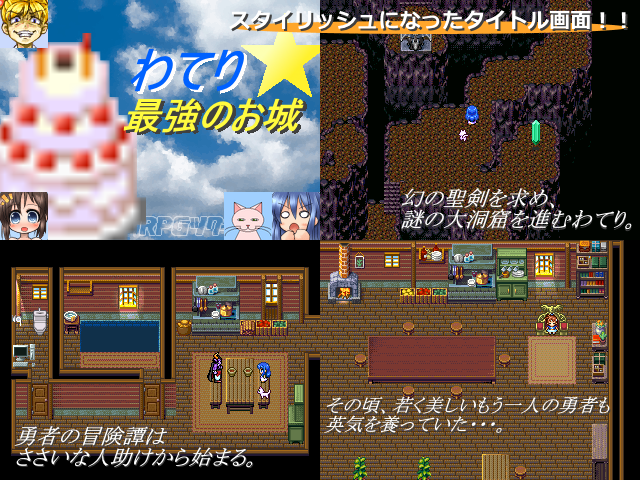

| |
 |
|
| 作者：比較的悪いスライム | |
| ツクール：2000 | |
| 作者コメント： ～あらすじ～ 初体験を済ませ、魔王把握の大任も無事に果たした勇者わてり。 ポテチ王国にはこれまで通り平穏な日々が訪れていた。 人々には笑顔が満ち溢れ、小鳥は歌いさえずり、 子犬達は英語の練習に精を出していた。 だが、平和は長く続かない・・・。 愛猫と共に、慎ましくも豊かに暮らす勇者の身に 「にゅっふっふ」とほくそ笑む新たな支配者の魔の手が迫る！ 再び剣をかざすときが来た。 世界の命運を賭けた激闘の火蓋がいま切って落とされる・・・。 ※本ゲーム内の激闘成分は１％程度です。 ～遊び方～ 前作、わてり☆魔王把握の続きです。 今回は遊びやすさに重点を置いて作りました。 前半は魔法猫と、後半はリナックスと旅をします。 いちおうＲＰＧなので、至ってシンプルなイベント戦があります。（ごくたまに） にゅふ！っとこう世界が危機に瀕しまして、わて！っとこう世界が救われる物語ですので、 ほのぼの耐性の無い方はご注意下さい。 ～プレイ時間～ ２時間～４時間くらい？（スライム基準） |
|
| 管理人コメント： ああ、またウィンドⅠがひどい目に遭うんだな… |
|
| ダウンロード(11.8MB 09/02更新) / 感想掲示板 | |
| 前の作品 / 次の作品 / TOPへ戻る | |